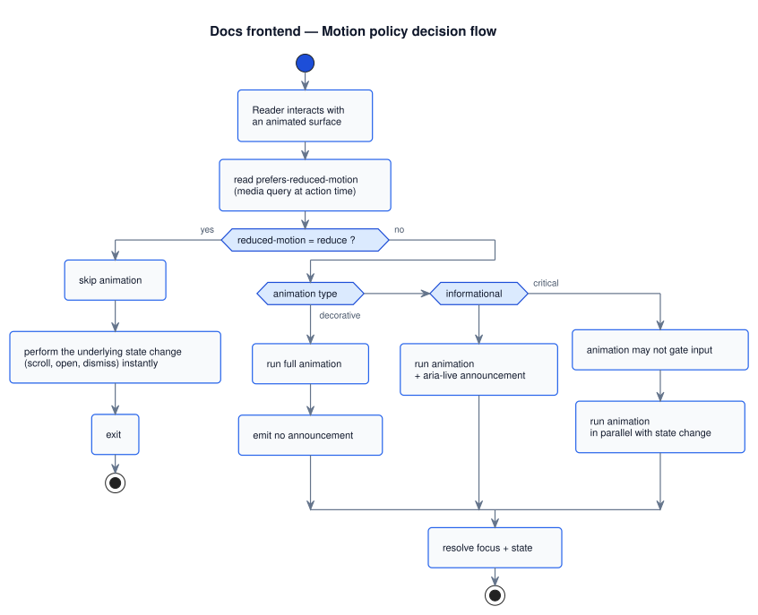

Docs frontend UI system, motion, and adaptivity Foundation
Docs portal · Motion & adaptivity
Overview
This page documents visual and interaction layer rules: typography, theme architecture, motion system, responsive behavior, and premium UX widgets (including rocket back-to-top).
Typography and density baseline
- Base font stack:
Inter, Segoe UI, Roboto, Arial, sans-serifindocs/assets/docs.css. - Code stack: UI monospace fallbacks for
code,pre, and technical chips. - Density preset: runtime adds
docs-density-ultra-compactclass onDOMContentLoaded. - Policy: compact information density with readable hierarchy (headings, body, metadata, chips).
Theme system and flashlight control
- Storage key:
docs-theme-preferencein local storage. - Mode cycle: automatic -> light -> dark via
cycleDocsTheme(). - Control style: flashlight icon button (
.top-nav__theme-btn--flashlight) indocs/assets/docs-site-nav.css. - Dark indicator: lit yellow state with
.top-nav__theme-btn--lit. - Feedback: top-centered pillow toast (
showDocsThemePillowToast()) with ARIA status semantics.
Core files: docs/assets/docs-nav.js, docs/assets/docs-site-nav.css,
docs/assets/docs-theme.css, and docs/assets/docs.css.
Visual tokens and premium surface model
Shared premium tokens (for cards, palette, chips, focus glow, and active states) are declared in
docs/assets/docs.css with dark-theme overrides under :root[data-theme="dark"].
--docs-premium-surface-*for panel backgrounds, border, and depth.--docs-premium-chip-*for action buttons and compact controls.--docs-premium-item-*for list items (default/hover/active).--docs-premium-focus-glow-*for consistent keyboard focus visibility.
Motion system
- Theme toast motion: visible and leaving transitions for
.docs-theme-toast--pillow. - Palette and toolbar motion: hover/focus transitions keep low-latency feel.
- Footer atmosphere: scroll-strength variable (
--docs-footer-scroll-strength) adjusted by runtime. - Reduced motion: dedicated
@media (prefers-reduced-motion: reduce)overrides in CSS and JS behavior fallbacks.
Motion policy decision flow
Every animated surface resolves through this flow before running. A single source of truth for the reduced-motion contract.

docs/uml/sequences/motion_policy_decision_flow.puml
Rocket back-to-top and reading UX helpers
- Rocket button:
initBackToTopButton()adds floating control with rocket SVG and launch animation classes. - Visibility logic: shown only near bottom on scrollable pages (
isNearBottom()threshold model). - Launch behavior: alternating left/right launch animation classes before smooth scroll to top.
- Reading progress:
initDocsReadingProgressBar()renders top progress bar based on scroll ratio. - Reading mode: toggles
docs-reading-modeclass and updates controls across toolbar/palette. - Continue reading: sticky resume prompt restores saved anchor/scroll location with 14-day TTL.
Reading UX implementation details
| Feature | Technical details |
|---|---|
| Reading mode | State is persisted in docs-reading-mode-enabled; hotkey handling uses isReadingModeHotkeyEvent(); visual state toggles docs-reading-mode on <body>. |
| Continue reading | Progress map stored in docs-reading-progress-v1 with 14-day TTL; heading snapshot is captured via currentContinueAnchorSnapshot(); prompt title supports labels such as Continue from § Guides catalog. |
| Reading progress bar | Top bar computes ratio from scrollY / (scrollHeight - innerHeight), updates aria-valuenow, and hides itself on short pages. |
| Rocket launch | Button visibility is threshold-based near page bottom; click toggles launch classes (--launch-left/--launch-right) and initiates smooth scroll to top. |
Visual reference
The decision flow above answers whether a motion runs. This section answers which
motions exist and how they relate. The timing palette is the canonical rhythm of the
portal — once you've seen it you'll recognise that hover transitions, drawer slides, and FAB pulses
all belong to a small, deliberate vocabulary. The reduced-motion column shows what each duration
collapses to under @media (prefers-reduced-motion: reduce).
Motion timing palette · the rhythm of the portal
Horizontal bars are durations to scale (0–1800 ms). Colour groups by category: critical (blue), informational (purple), decorative (amber). The right strip maps each to its reduced-motion fallback — most collapse to 0 ms.
docs/assets/docs.css and per-component spec pages
(popups,
report-bug FAB,
rocket launch,
resume + back-to-top).
Why eight, not eighty. A portal-wide motion catalogue with hundreds of unique durations becomes a tax on every change — every new surface needs a discussion. Eight named slots keep the rhythm narrow enough that a reader lands on the page and instantly recognises the cadence, and a contributor reaches for an existing slot before inventing a new one. New motions should land on one of these eight; if they don't fit, the right answer is usually "drop the motion".
Why decorative motion drops to zero, but informational keeps a fragment. Reduced-
motion users still need to know that a state changed. The toast pillow keeps a 100 ms appearance
animation under reduce because vanishing instantly would feel like an error; everything
decorative (idle pulses, hover bobbles, ambient orbits) goes away entirely because the surface still
communicates clearly without it.
Responsive and adaptive model
Canonical viewport breakpoints. This is the single source of truth for device tiers across all docs portal pages. Anywhere else that names a tier (glossary, screen specs, process checklists, internal block specs) must use these exact ranges and link back to #canonical-breakpoints. Component-level rules in CSS may use extra cut-offs (640 px, 720 px, 900 px) for layout-specific reflow — those are implementation details, not device tiers, and should not appear in device-class documentation.
| Tier | Width | Behavior | Main files |
|---|---|---|---|
| Desktop | ≥ 1025 px | Sidebar visible, top groups visible, in-page TOC visible, quick actions enabled. | internal-layout.css, docs-site-nav.css, docs.css |
| Tablet | 761–1024 px | Drawer mode for internal docs, top groups hidden on internal pages, quick-actions toolbar
disabled (gated by DOCS_PAGE_ACTIONS_MIN_WIDTH = 761 in
docs-nav.js). |
internal-sidebar.js, docs-site-nav.css, docs-nav.js |
| Mobile | ≤ 760 px | Menu-first navigation, compact controls, no quick-actions panel, no desktop TOC aside. Covers all phones in portrait and landscape (e.g. iPhone 17 Pro Max ≈ 440 CSS px). | internal-layout.css, docs.css, docs-nav.js |
Component-level breakpoints (not device tiers). Internal-layout sidebar reflows at 901 px and 900 px because the wide rail no longer fits — see CSS architecture § sidebar component breakpoints. A secondary mobile-compact cut-off lives at 520 px (heading scale + safe-area padding) inside the mobile tier. Home landing hero collapses at 640 px. These cut-offs are layout-specific and never used to name a device.
Mobile contract — normative
Every docs portal page must read on a phone (≈360–440 CSS px) without degraded typography, overflowing tables, or page-level horizontal scroll. The rules below are normative: violations are review blockers. Tier names follow #canonical-breakpoints.
Typography ladder (uniform across viewports)
The ladder renders identically on desktop, tablet, and mobile — there is no viewport-specific override. Pages must look the same regardless of width.
| Surface | Size token | Computed at html 17 px root |
Source rule |
|---|---|---|---|
Body prose (p, li, blockquote, dd) |
0.9rem (--fs-body) |
≈ 15.3 px | docs.css § canonical font ladder |
Inline code |
0.92em of parent |
≈ 14.1 px (when parent is body) | docs.css :not(pre)>code |
Block pre (global) |
0.9rem (--fs-body) |
≈ 15.3 px | docs.css pre |
Block pre inside internal layout |
0.75rem (--fs-meta) |
≈ 12.75 px | internal-layout.css .internal-layout__main pre |
Table cells (th, td) |
0.9rem (--fs-body) |
≈ 15.3 px | docs.css base + mobile padding tighten |
| H1 | 1.6rem (--fs-h1) |
≈ 27.2 px | docs.css canonical font ladder |
| H2 | 1.2rem (--fs-h2) |
≈ 20.4 px | docs.css canonical font ladder |
| H3 | 1.05rem (--fs-h3) |
≈ 17.85 px | docs.css canonical font ladder |
| Meta (badges, breadcrumbs, hints, sidebar) | 0.75rem (--fs-meta) |
≈ 12.75 px | docs.css canonical font ladder |
| Eyebrow (uppercase section caps) | 0.68rem (--fs-eyebrow) |
≈ 11.56 px | docs.css canonical font ladder |
Uniform across viewports: a value in this ladder renders at the same computed
size on desktop, tablet, and mobile. No @media (max-width: …) rule
may set font-size on prose, headings, code, or tables in
main.container. iOS auto-shrink is disabled globally via
-webkit-text-size-adjust: 100% on html; the authored size
is what the reader sees.
FAB cluster — uniform sizing across viewports
The bottom-right floating action button cluster (back-to-top rocket
.docs-back-to-top + report-bug .docs-report-bug-fab)
is part of the same uniform-across-viewports contract: same width, height,
glyph size, right inset, and bottom offset on desktop, tablet, and mobile.
| Property | Value (every viewport) |
|---|---|
| Outer button (rocket and bug) | 52 × 52 px — meets WCAG 2.1 AAA tap-target |
| Inner glyph (rocket SVG, bug SVG) | 28 × 28 px |
| Right inset | max(1.25rem, env(safe-area-inset-right, 0px)) |
| Rocket bottom inset | max(1.25rem, env(safe-area-inset-bottom, 0px)) + var(--docs-footer-visible-h, 0px) |
| Bug bottom inset (above rocket) | Rocket inset + 64 px stack offset = 12 px visible gap |
| Z-index | rocket 40, bug 39; both below modal/drawer |
Forbidden: any @media (max-width: …) rule that
changes width, height, padding, or icon
size on either FAB. Drift between the two FABs is a review blocker. Spec pages:
rocket §positioning-and-stacking,
bug §positioning-and-stacking.
Container & safe-area padding
main.containeron desktop:padding: 28px 20px 80px(unchanged).main.containeron the secondary cut-off (≤520 px): top/right/bottom/left usemax(fallback, env(safe-area-inset-*))so notched phones (iPhone 12+) keep prose clear of the camera island and home indicator.- Internal layout on ≤760 px:
.internal-layout__main .containerpicks uppadding-left/right: max(6px, env(safe-area-inset-*))so the prose never touches the screen edge. - Page-title row sticky strip becomes
flex-wrap: wrapon ≤760 px so a long H1 keeps the menu and theme buttons reachable on the next line.
Table & code wrapping policy
- Wrap every multi-column table (3+ columns or any column with long
code/identifiers) in<div class="docs-table-scroll" role="region" aria-label="…">…</div>. Thearia-labelis required for screen-reader navigation. - If a hand-authored table is left unwrapped, the global mobile fallback in
docs.cssswitches it todisplay: block; overflow-x: autoso a row stays one line and the reader can swipe sideways. This is a safety net, not a substitute for.docs-table-scroll. - Long URLs and long token names in body prose must wrap. The mobile rule sets
overflow-wrap: anywhereon inlinecodeandainsidep/li/dd— keep the markup so this rule applies (do not wrap a long URL in extra spans that escape the selector). - Use a block
<pre>for code longer than ~20 characters.prekeepswhite-space: preand provides its own horizontal scroll; inlinecodeis for short tokens only.
Disabled on mobile (normative)
- Quick-actions panel — gated at
DOCS_PAGE_ACTIONS_MIN_WIDTH = 761indocs-nav.js. - Reading-mode toolbar button — lives inside the quick-actions toolbar. The hotkey continues to work; only the visible button is hidden.
- Hotkey hint tip — suppressed via
docs.css. - Desktop in-page TOC aside (On this page) — rendered
only at
min-width: 1025px; mobile uses the auto in-page TOC mount inline. - Top-nav search field on the public top bar — collapsed to the slash hotkey only on ≤760 px.
- Internal sidebar — replaced by drawer; the menu button on the page title row opens it.
iOS Safari auto-shrink fallback is also disabled globally via
-webkit-text-size-adjust: 100% on html. Without this, even a small
horizontal overflow shrinks the entire page text.
Acceptance smoke checklist
Run on every page that renders new prose, a table, a code sample, or a diagram. Test viewport: iPhone 17 Pro Max (≈440 CSS px) and iPhone SE (375 CSS px).
- Page has no body-level horizontal scroll. Only opt-in scroll regions
(
.docs-table-scroll,pre,.sys-diagram__canvas) may scroll horizontally. - Body prose computed font-size is ≈ 15.3 px in DevTools
(
--fs-body=0.9remon the 17 px root, identical on every viewport — no mobile lift). - All tables either fit the column or scroll horizontally inside their wrapper. No "letter column" effect.
preblocks scroll horizontally; lines are not wrapped at character boundaries.- Inline
codewith long tokens and long URLs in prose wrap inside the content column, not under or past the right edge. - Sticky page-title row does not occlude the first paragraph after the H1.
- Drawer opens, locks
bodyscroll, returns scroll on close. - Notched safe-area: prose padding clears the camera island and home indicator.
- Reading-mode toolbar button is absent (expected). The Shift+F hotkey still toggles reading mode.
- Quick-actions palette does not respond to the launcher (expected; hotkey still works).
- Back-to-top rocket appears near page bottom and does not overlap the footer.
Fail any item → treat as a regression and block merge.
Page history
| Date | Change | Author |
|---|---|---|
Added the Visual reference section: motion timing palette as a horizontal-bar chart of the eight canonical motion durations (60–1700 ms) colour-coded by category (critical / informational / decorative), each row paired with its prefers-reduced-motion: reduce fallback (most → 0; toast pillow → 100 ms; :active kept). Plus three easing-curve callouts showing the cubic-bezier vocabulary covering the entire portal. |
Ivan Boyarkin | |
| Added Foundation page-type badge to H1. | Ivan Boyarkin | |
| Added detailed UI/theming/motion/adaptive frontend documentation, including rocket and reading UX. | Ivan Boyarkin |